普洱之秘：如何才能买到价格与品质相匹配的正宗普洱？
写在前面：
源头寻普洱茶，
寻的是正宗的古树纯料；
大众买普洱，
买的是真正的物有所值。
如何买到价格匹配相应品质的正宗普洱？读透本文，让你茅塞顿开。
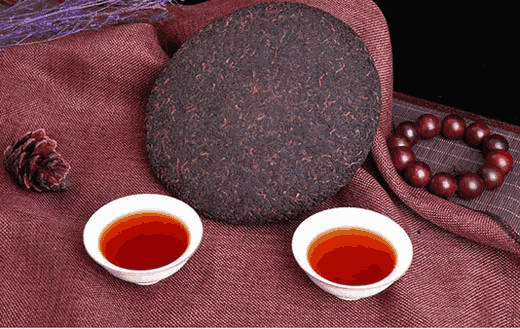我是小李，一个忠实的普洱茶爱好者和访茶人。从小在父母的耳濡目染下，深受茶文化的熏陶，在通过喝茶和不断学习的过程中，我结识了一些懂茶和爱茶的朋友，他们中不乏茶学院教授、茶文化研究院专家、茶友会高级顾问等茶界人物，他们介绍我普洱原产地的原生渠道这是非一般的关系才能获得的资源，细思之后决定成立了我自己的寻访普洱团队。我们走遍了云南大大小小所有的20座茶山，翻山越岭，只为寻找优质、实惠的源头古树茶。
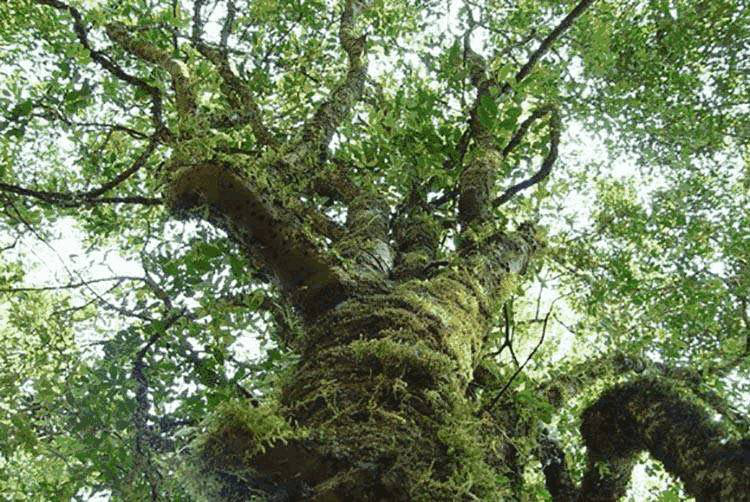多年来，很多茶友都在困惑，什么价格的普洱是真普洱？这个问题千人千答，我的答案是：把几十块到几百块一斤的茶喝明白！也能把几千块到几万块一斤的茶品的透！价格只是一层外衣。这里我就教大家如何剥开这层外衣，揭露真正的普洱之美。
深入普洱茶的源头，省去中间环节千金易得，好茶难寻。高品质的普洱古树茶，要到普洱古茶树生长的源头去寻找。
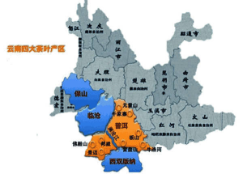很多朋友不知道，普洱的产区其实有四个：保山市、临沧市、普洱市、西双版纳地区，甚至下辖三大茶区、以下20座各有其名的茶山……，细分之下更是数不胜数，叫法五花八门，价格更是高低不同，所以，现在你还单纯的以为价格是判断普洱真假的主要因素吗？千金易得，好茶难寻。而我成立寻茶小队的目的之一，就是帮每个人找到适合自己价值预期的正宗源头普洱！接下来就带大家看一看我的寻茶之路……
大名鼎鼎的“老班章”！普洱爱好者对它再熟悉不过了，这也是我情有独钟的西双版纳勐海县茶山的村寨，大门只能往外运茶，不能往里运茶，目的就是要远离以次充好。
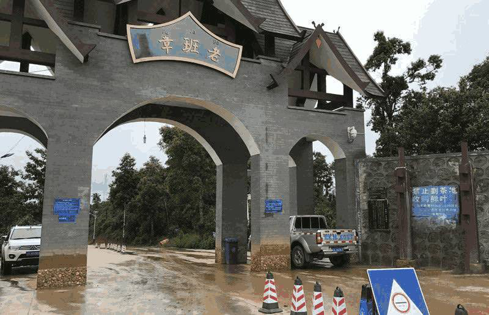(图为老班章村口)
关于价格 让你买到的普洱茶，是接近茶农的一手价格让更多的茶友能喝到良心的正宗普洱茶，了解普洱茶的内幕。让面朝黄土背朝天的茶农们把茶叶卖出去，改善贫困的生活。这使我成立普洱之家团队的目的之二，你无法想象出，当地民风淳朴到像个孩子是种什么样的体验。
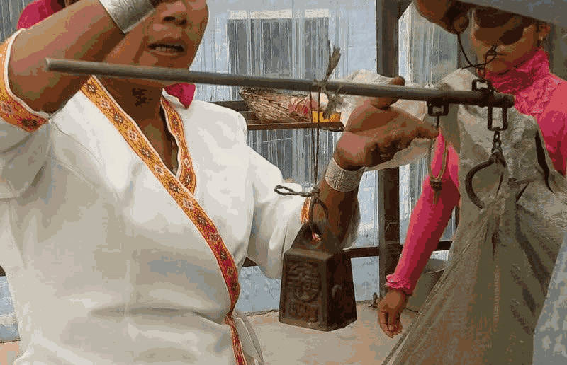(图为我们与茶农收茶时，茶农专注的样子)
我们算了一笔账，通过源头收茶，省去所有中间环节，直达消费者手中，将古树茶的市场价降低50%以上，真的一点都不难！造成现在市场混乱局面的主要的原因就是中间商的把持加上信息的不通畅，而我们团队就是要打破这种隐形的“垄断”，因为前面说过，我们的团队支持一直很强大！
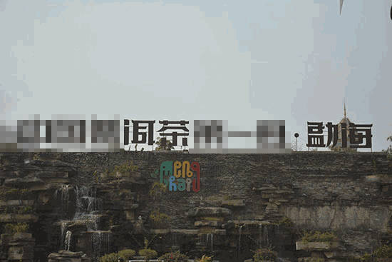（图片拍摄于西双版纳勐海县）
辨别普洱
带你从一个茶农和多年做茶经验者的角度，认识普洱茶 1、怎样鉴别“茶王”老班章？在采摘鲜叶的时候，我们不难发现老班章的叶片有一个巴掌那么大。近来年，老班章古树茶受到很多茶人的青睐。追随老班章的茶友和茶商也越来越多，老班章的名气也越来越大，作为茶商和普洱爱好者的收藏佳品。
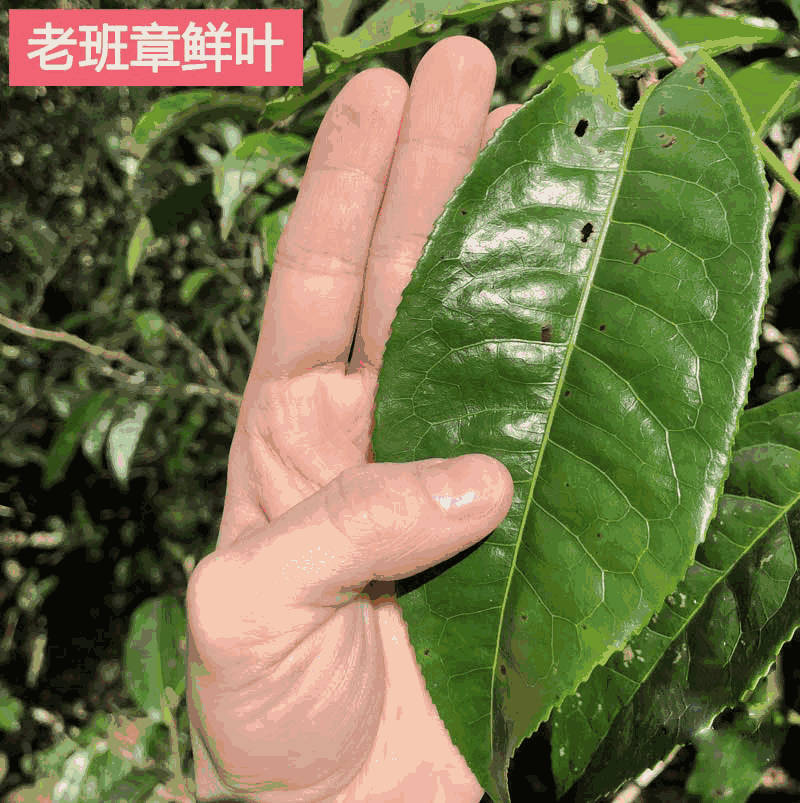老班章鲜叶的背毛绒毛多，叶片厚实，干茶条索白毫显著，古树茶的白毫紧紧的长在叶片上，所以茶汤的比其他茶叶来说更为正透。老班章因产量少而导致一饼难求，甚至真假难辨，很多茶友都以拥有一饼真正的老班章为傲。
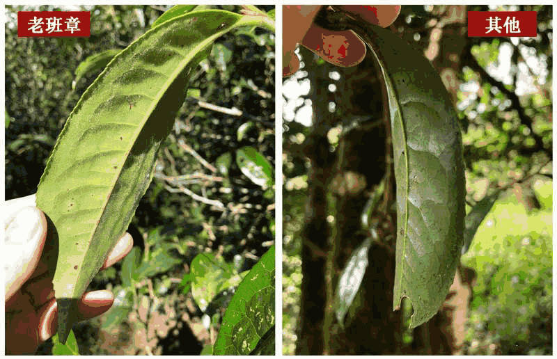 2、 怎么分辨台地茶和古树茶？台地茶种植在山上的梯田，为台阶式，所以被茶农称为“台地茶”。台地茶都是人工培育茶，成片生长。而古树茶，则是生长在原始森林中，无人管理无人种植，树龄在百年以上，东一棵西一棵，不规则的生长。
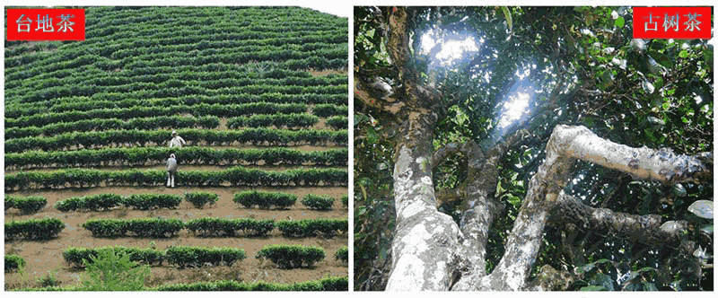从汤色来看，台地茶一开始汤色浓厚，几泡过后掉水很快，很快就失去了滋味。而古树茶，从始至终，汤色持续稳定，在十几泡过后，口感依旧。
现在，我们的内容体系很全面，想要了解更多普洱茶的文化与知识，只要你喝普洱茶的过程有任何的疑问，都能以丰富的专业知识来为您解答。
如何挑选适合自己的古树茶？
带你从一个茶农和多年做茶经验者的角度，选到适合自己口感的好茶 茶有百味，适口为珍，勐海、临沧两大茶区、十二大茶山、每个茶山十几个寨子，古树纯料茶口味至少有上百种，怎样选择一款属于自己的适口茶呢？班章：霸气十足，回甘猛烈
班章系古树茶位于布朗山，包括老班章、老曼峨、新班章、班盆、贺开等古树村寨，有强烈的山野气韵，嗅散茶和茶饼有很突显的古树茶特有之香，香型在兰花香与花蜜香之间；香气很强，在茶汤、叶底、杯底上都可以嗅到，而且杯底留香比一般古树茶更强更长久；苦涩退化很快，一分钟左右就转而回甘。
冰岛：细润冰甜，满口生津冰岛五寨分别为：冰岛老寨、地界、坝歪、糯伍、南迫，普洱茶界有班章为王、冰岛为后的说法，冰岛茶回甘效果持久、汤色鲜亮、叶底柔软、匀称，相比茶霸“老班章”甜味更加浓厚，细腻，齿夹生津之感更为明显。冰岛茶茶汤色匀鲜亮、清澈见底、浓厚如油、杯壁有明显光圈；冰岛茶滋味微苦甘甜、变化多端、唇齿留香；饮毕，口腔内蜜香浓厚，久久不能散去。
易武：柔中带刚，细腻柔滑易武包括薄荷塘、弯弓、麻黑、落水洞、刮风寨等村寨，易武特点为苦涩较轻、香气较好，汤中带甜，汤质较滑厚、回甘较好、陈化较快等特点，由于矮化和长于山林的特点，山野气韵不同寨子的有所区别。
昔归：忙麓圣境 稻香悠扬喝到昔归的茶，独特的兰香间又有清甜的糖香，在茶汤间浮动绵延。喝昔归茶，香甜醇厚的汤感，丝丝分分，散发着幽美绵长的香韵，仿佛诠释着那经年长久的时光。昔归茶是很有性格的。从茶汤入口的一刻，它便用那特有的、高扬的香气宣示："我就是昔归，一饮便可知晓"没有半分掩饰，昔归古树茶，就是这般绽放、直率、爽朗茶气强劲饱满，汤感柔滑甜醇，香气极其馥郁绽放，浓郁而张扬，香气、口感辨识度都非常高；茶性亦独树一帜，回甘时间长而滋味佳，几十开后仍显清甜淡雅。
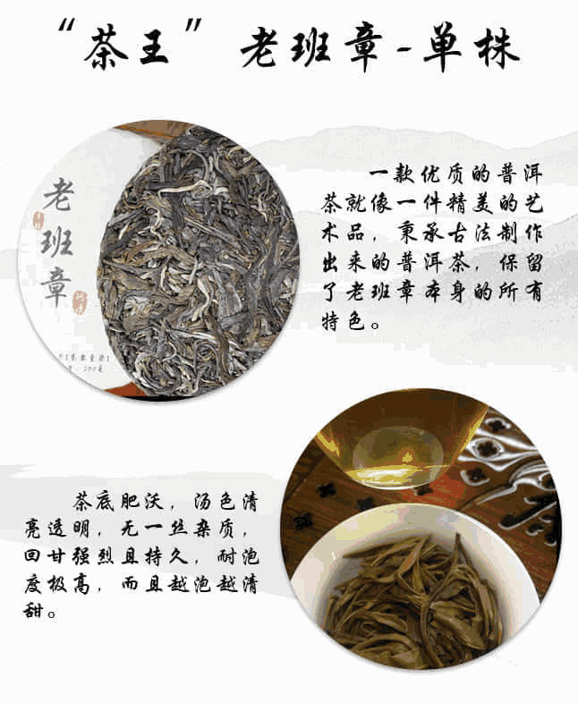 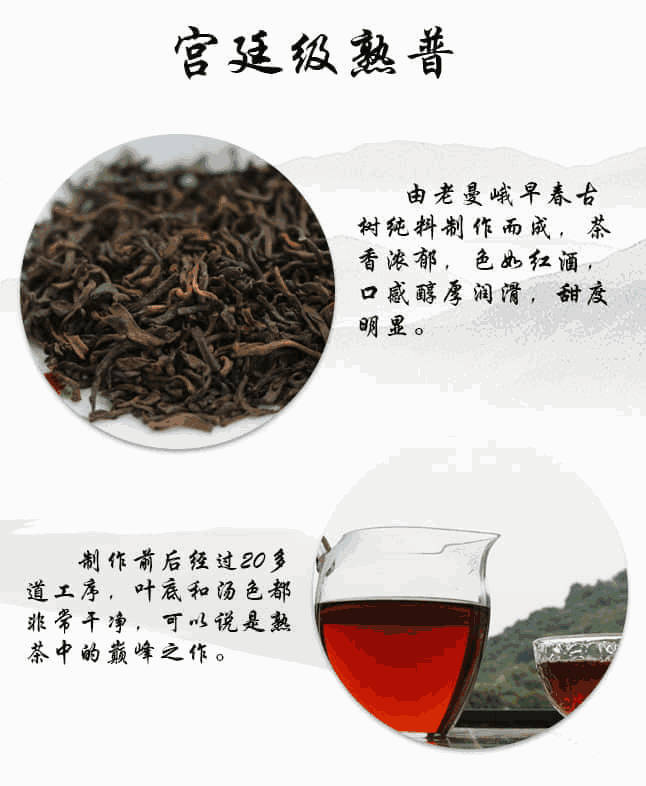 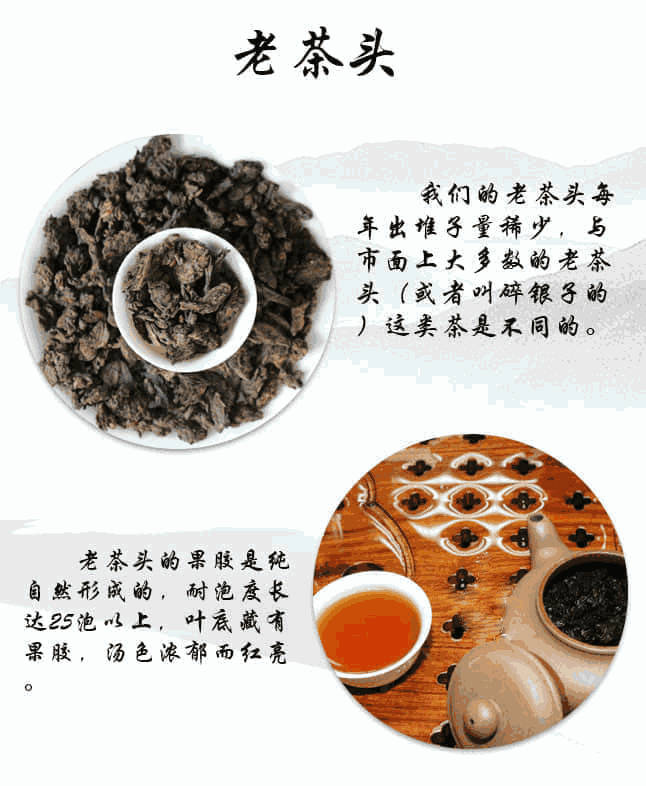现在，我们的内容体系很全面，想要了解更多普洱茶的文化与知识，只要你喝普洱茶的过程有任何的疑问，都能以丰富的专业知识来为您解答。